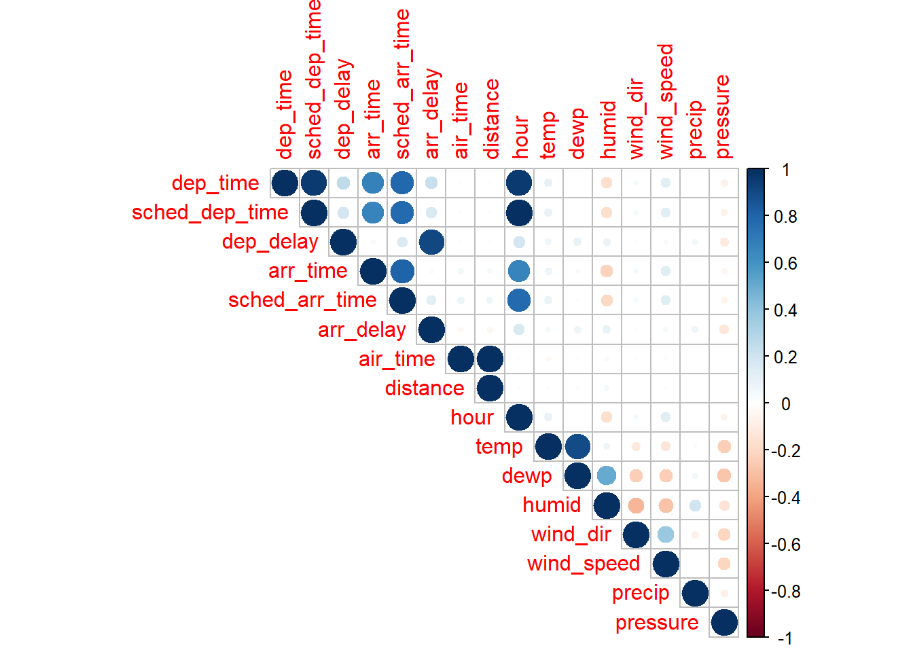

> library(readxl)
> joined_data <- read_excel("D:\\Rstudio\\Rmyfile\\Flights\\EDA\\joined_data.xlsx")linear regression
一般线性回归
> D <- lm(arr_delay~month+day+hour+dep_time+sched_dep_time+arr_time+carrier+flight+origin+dest+air_time+distance+temp+dewp+humid+wind_dir+wind_speed+pressure+visib,data = joined_data)
> summary(D)
Call:
lm(formula = arr_delay ~ month + day + hour + dep_time + sched_dep_time +
arr_time + carrier + flight + origin + dest + air_time +
distance + temp + dewp + humid + wind_dir + wind_speed +
pressure + visib, data = joined_data)
Residuals:
Min 1Q Median 3Q Max
-119.98 -18.81 -7.22 7.12 1283.34
Coefficients:
Estimate Std. Error t value Pr(>|t|)
(Intercept) 3.601e+02 3.373e+01 10.676 < 2e-16 ***
month -2.750e-01 2.200e-02 -12.500 < 2e-16 ***
day 7.307e-02 8.059e-03 9.067 < 2e-16 ***
hour 4.103e+00 3.817e-01 10.751 < 2e-16 ***
dep_time 7.860e-02 5.367e-04 146.451 < 2e-16 ***
sched_dep_time -9.199e-02 3.876e-03 -23.734 < 2e-16 ***
arr_time -1.625e-02 1.915e-04 -84.849 < 2e-16 ***
carrierAA -4.968e+00 5.796e-01 -8.571 < 2e-16 ***
carrierAS -1.302e+01 1.800e+00 -7.237 4.58e-13 ***
carrierB6 1.633e+00 5.398e-01 3.024 0.002494 **
carrierDL -5.109e+00 5.048e-01 -10.120 < 2e-16 ***
carrierEV 8.767e+00 4.460e-01 19.655 < 2e-16 ***
carrierF9 8.411e+00 1.725e+00 4.875 1.09e-06 ***
carrierFL 4.765e+00 1.054e+00 4.523 6.11e-06 ***
carrierHA -1.269e+01 3.137e+00 -4.045 5.24e-05 ***
carrierMQ 4.915e+00 4.484e-01 10.960 < 2e-16 ***
carrierOO 2.000e+00 7.258e+00 0.276 0.782874
carrierUA -3.408e+00 5.639e-01 -6.043 1.51e-09 ***
carrierUS -2.314e+00 6.065e-01 -3.814 0.000137 ***
carrierVX -5.070e+00 8.238e-01 -6.154 7.56e-10 ***
carrierWN -5.860e-02 7.146e-01 -0.082 0.934645
carrierYV 4.390e+00 1.784e+00 2.460 0.013878 *
flight -8.266e-04 1.225e-04 -6.745 1.53e-11 ***
originJFK -2.125e+00 3.334e-01 -6.374 1.84e-10 ***
originLGA 6.214e-01 3.287e-01 1.890 0.058708 .
destACK -1.152e+02 2.846e+01 -4.048 5.18e-05 ***
destALB -1.149e+02 2.916e+01 -3.942 8.10e-05 ***
destANC 1.527e+02 3.020e+01 5.056 4.28e-07 ***
destATL -6.041e+01 1.868e+01 -3.233 0.001223 **
destAUS -1.341e+01 5.947e+00 -2.255 0.024103 *
destAVL -8.196e+01 2.164e+01 -3.788 0.000152 ***
destBDL -1.193e+02 2.963e+01 -4.026 5.67e-05 ***
destBGR -9.881e+01 2.534e+01 -3.899 9.67e-05 ***
destBHM -6.192e+01 1.703e+01 -3.635 0.000278 ***
destBNA -6.877e+01 1.864e+01 -3.690 0.000224 ***
destBOS -1.129e+02 2.841e+01 -3.975 7.05e-05 ***
destBQN 1.837e+01 5.098e+00 3.603 0.000315 ***
destBTV -1.058e+02 2.714e+01 -3.897 9.75e-05 ***
destBUF -1.067e+02 2.662e+01 -4.008 6.12e-05 ***
destBUR 5.646e+01 1.155e+01 4.887 1.02e-06 ***
destBWI -1.115e+02 2.865e+01 -3.894 9.88e-05 ***
destBZN 3.096e+01 7.405e+00 4.181 2.90e-05 ***
destCAE -5.847e+01 2.152e+01 -2.717 0.006582 **
destCAK -9.116e+01 2.503e+01 -3.642 0.000270 ***
destCHO -1.121e+02 2.713e+01 -4.130 3.62e-05 ***
destCHS -7.545e+01 2.077e+01 -3.633 0.000280 ***
destCLE -9.398e+01 2.458e+01 -3.824 0.000131 ***
destCLT -8.268e+01 2.238e+01 -3.694 0.000221 ***
destCMH -9.011e+01 2.353e+01 -3.829 0.000129 ***
destCRW -9.452e+01 2.439e+01 -3.875 0.000107 ***
destCVG -8.405e+01 2.173e+01 -3.869 0.000109 ***
destDAY -8.643e+01 2.238e+01 -3.862 0.000113 ***
destDCA -1.107e+02 2.808e+01 -3.941 8.13e-05 ***
destDEN -1.541e+00 4.424e+00 -0.348 0.727569
destDFW -2.374e+01 8.050e+00 -2.949 0.003190 **
destDSM -4.923e+01 1.416e+01 -3.477 0.000507 ***
destDTW -9.158e+01 2.313e+01 -3.959 7.52e-05 ***
destEGE 9.357e-01 4.040e+00 0.232 0.816854
destEYW -1.270e+01 1.520e+01 -0.836 0.403323
destFLL -4.006e+01 1.331e+01 -3.009 0.002622 **
destGRR -7.524e+01 2.117e+01 -3.554 0.000380 ***
destGSO -8.959e+01 2.388e+01 -3.751 0.000176 ***
destGSP -7.814e+01 2.135e+01 -3.660 0.000253 ***
destHDN 1.154e+01 1.124e+01 1.027 0.304540
destHNL 2.982e+02 5.475e+01 5.447 5.13e-08 ***
destHOU -2.064e+01 7.437e+00 -2.775 0.005527 **
destIAD -1.084e+02 2.785e+01 -3.891 9.99e-05 ***
destIAH -1.649e+01 7.619e+00 -2.164 0.030440 *
destILM -1.000e+02 2.346e+01 -4.263 2.02e-05 ***
destIND -7.761e+01 2.041e+01 -3.803 0.000143 ***
destJAC 4.715e+01 8.837e+00 5.336 9.52e-08 ***
destJAX -6.245e+01 1.748e+01 -3.573 0.000353 ***
destLAS 4.572e+01 7.712e+00 5.929 3.06e-09 ***
destLAX 6.524e+01 1.150e+01 5.674 1.40e-08 ***
destLEX -9.271e+01 4.324e+01 -2.144 0.032048 *
destLGB 5.564e+01 1.148e+01 4.849 1.24e-06 ***
destMCI -4.491e+01 1.278e+01 -3.514 0.000441 ***
destMCO -5.046e+01 1.547e+01 -3.261 0.001109 **
destMDW -7.010e+01 1.929e+01 -3.633 0.000280 ***
destMEM -5.513e+01 1.526e+01 -3.612 0.000304 ***
destMHT -1.086e+02 2.804e+01 -3.874 0.000107 ***
destMIA -3.704e+01 1.297e+01 -2.857 0.004283 **
destMKE -7.012e+01 1.906e+01 -3.678 0.000235 ***
destMSN -6.242e+01 1.786e+01 -3.495 0.000475 ***
destMSP -4.960e+01 1.421e+01 -3.490 0.000483 ***
destMSY -3.695e+01 1.149e+01 -3.215 0.001303 **
destMTJ 1.348e+01 1.073e+01 1.256 0.208951
destMVY -1.234e+02 2.894e+01 -4.264 2.01e-05 ***
destMYR -8.583e+01 2.270e+01 -3.782 0.000156 ***
destOAK 6.412e+01 1.344e+01 4.769 1.85e-06 ***
destOKC -2.668e+01 9.122e+00 -2.925 0.003448 **
destOMA -4.332e+01 1.213e+01 -3.570 0.000357 ***
destORD -7.392e+01 1.915e+01 -3.859 0.000114 ***
destORF -1.047e+02 2.675e+01 -3.915 9.06e-05 ***
destPBI -3.979e+01 1.401e+01 -2.840 0.004516 **
destPDX 5.575e+01 1.118e+01 4.986 6.16e-07 ***
destPHL -1.176e+02 3.016e+01 -3.898 9.69e-05 ***
destPHX 3.759e+01 6.205e+00 6.058 1.38e-09 ***
destPIT -1.033e+02 2.599e+01 -3.974 7.06e-05 ***
destPSE 4.088e+01 4.909e+00 8.328 < 2e-16 ***
destPSP 4.645e+01 1.366e+01 3.400 0.000673 ***
destPVD -1.099e+02 2.888e+01 -3.807 0.000141 ***
destPWM -1.034e+02 2.697e+01 -3.836 0.000125 ***
destRDU -9.291e+01 2.439e+01 -3.809 0.000140 ***
destRIC -1.023e+02 2.679e+01 -3.819 0.000134 ***
destROC -1.068e+02 2.728e+01 -3.917 8.98e-05 ***
destRSW -4.587e+01 1.326e+01 -3.460 0.000541 ***
destSAN 6.361e+01 1.101e+01 5.776 7.68e-09 ***
destSAT -7.365e+00 5.145e+00 -1.432 0.152280
destSAV -6.928e+01 1.940e+01 -3.571 0.000355 ***
destSBN -8.285e+01 2.447e+01 -3.386 0.000710 ***
destSDF -8.337e+01 2.051e+01 -4.065 4.80e-05 ***
destSEA 5.426e+01 1.062e+01 5.109 3.24e-07 ***
destSFO 7.498e+01 1.337e+01 5.607 2.06e-08 ***
destSJC 5.967e+01 1.332e+01 4.481 7.44e-06 ***
destSJU 1.874e+01 4.664e+00 4.018 5.86e-05 ***
destSLC 2.273e+01 3.870e+00 5.875 4.24e-09 ***
destSMF 6.440e+01 1.254e+01 5.135 2.83e-07 ***
destSNA 5.123e+01 1.114e+01 4.598 4.26e-06 ***
destSRQ -4.547e+01 1.386e+01 -3.280 0.001037 **
destSTL -6.097e+01 1.652e+01 -3.691 0.000223 ***
destSTT 2.491e+01 4.578e+00 5.441 5.31e-08 ***
destSYR -1.125e+02 2.823e+01 -3.985 6.76e-05 ***
destTPA -4.600e+01 1.444e+01 -3.185 0.001447 **
destTUL -3.271e+01 1.093e+01 -2.993 0.002763 **
destTVC -7.602e+01 2.089e+01 -3.640 0.000273 ***
destTYS -7.375e+01 2.074e+01 -3.557 0.000376 ***
destXNA -4.556e+01 1.215e+01 -3.749 0.000178 ***
air_time 9.137e-01 6.594e-03 138.576 < 2e-16 ***
distance -1.938e-01 1.739e-02 -11.145 < 2e-16 ***
temp 2.818e-01 4.361e-02 6.462 1.03e-10 ***
dewp -2.075e-03 4.699e-02 -0.044 0.964775
humid 2.238e-01 2.409e-02 9.289 < 2e-16 ***
wind_dir -9.334e-03 7.868e-04 -11.864 < 2e-16 ***
wind_speed 4.974e-01 1.499e-02 33.174 < 2e-16 ***
pressure -2.708e-01 1.106e-02 -24.471 < 2e-16 ***
visib -1.162e+00 6.150e-02 -18.890 < 2e-16 ***
---
Signif. codes: 0 '***' 0.001 '**' 0.01 '*' 0.05 '.' 0.1 ' ' 1
Residual standard error: 37.57 on 284413 degrees of freedom
Multiple R-squared: 0.1996, Adjusted R-squared: 0.1992
F-statistic: 521.4 on 136 and 284413 DF, p-value: < 2.2e-16将几乎所有的变量都放进去之后，发现拟合效果并不好，仅能解释20%的延迟到达的变异。
同时，我们发现，在全模型下，上面提到的两个正相关的变量temp与dewp的P值，temp十分显著，dewp的P=0.96》0.05。因此我们分别对两个变量做一个单变量的线性回归做一下验证。
> lm(data = joined_data,arr_delay~temp) |>summary()
Call:
lm(formula = arr_delay ~ temp, data = joined_data)
Residuals:
Min 1Q Median 3Q Max
-91.50 -22.14 -10.27 7.14 1268.50
Coefficients:
Estimate Std. Error t value Pr(>|t|)
(Intercept) -1.20669 0.25970 -4.647 3.38e-06 ***
temp 0.10475 0.00435 24.080 < 2e-16 ***
---
Signif. codes: 0 '***' 0.001 '**' 0.01 '*' 0.05 '.' 0.1 ' ' 1
Residual standard error: 41.94 on 284548 degrees of freedom
Multiple R-squared: 0.002034, Adjusted R-squared: 0.00203
F-statistic: 579.8 on 1 and 284548 DF, p-value: < 2.2e-16
> lm(data = joined_data,arr_delay~dewp) |>summary()
Call:
lm(formula = arr_delay ~ dewp, data = joined_data)
Residuals:
Min 1Q Median 3Q Max
-93.52 -22.19 -10.06 7.44 1267.78
Coefficients:
Estimate Std. Error t value Pr(>|t|)
(Intercept) -1.89496 0.18056 -10.49 <2e-16 ***
dewp 0.16515 0.00404 40.88 <2e-16 ***
---
Signif. codes: 0 '***' 0.001 '**' 0.01 '*' 0.05 '.' 0.1 ' ' 1
Residual standard error: 41.86 on 284548 degrees of freedom
Multiple R-squared: 0.005839, Adjusted R-squared: 0.005836
F-statistic: 1671 on 1 and 284548 DF, p-value: < 2.2e-16忽略R2的值，我们发现,两个模型均显著，但我们上面全模型中，dewp并不显著。因此我们认为，在对arr_delay的贡献上，dewp可能会抢temp的功劳而认为其与航班推迟有关，而其实是因为dewp与temp有关所以才在单个模型中显著。当二者同时出现在模型中时，真正起作用的变量就体现出来了。证实了我们课上的结论。因此之后筛选模型时，将会优先考虑使用temp而不是dewp。
观察变量之间的相关性
将关心的变量中数值类型和字符类型分开处理
> numdata <- joined_data[,c(4:9,15:17,20:26)]
> strdata <- joined_data[,c(2,3,10,13,14)]对于数值类型变量做相关性图
> library(corrplot)
> corrplot(corr = cor(numdata),type = 'upper')
发现，arr_delay与dep_delay之间有很强的相关性，因此在回归方程中引入dep_delay变量。解释为：离开延迟，大概率到达也会延迟。
根据实际情况回归
从乘客角度出发筛选变量。已知，出发月份2，日期3，预计离开时间5，离开延迟9，预计到达时间8，航空公司10，出发地13，目的地14（回归不显著），距离16，空气质量数据20：27（wind_gust由于缺失数据太多，不纳入拟合方程中）
> Care_data <- joined_data[,c(2,3,5,6,8,9,10,13,14,16,17,20:27)]> lm(arr_delay~.-day-dewp,data = Care_data) |>summary()
Call:
lm(formula = arr_delay ~ . - day - dewp, data = Care_data)
Residuals:
Min 1Q Median 3Q Max
-75.686 -10.475 -1.816 8.247 190.253
Coefficients:
Estimate Std. Error t value Pr(>|t|)
(Intercept) 1.781e+02 1.514e+01 11.765 < 2e-16 ***
month 1.239e-01 9.914e-03 12.502 < 2e-16 ***
sched_dep_time -3.382e-03 1.718e-03 -1.969 0.048998 *
dep_delay 1.012e+00 8.776e-04 1152.781 < 2e-16 ***
sched_arr_time -1.643e-04 1.129e-04 -1.456 0.145416
carrierAA 3.172e+00 2.172e-01 14.605 < 2e-16 ***
carrierAS -3.321e+00 7.908e-01 -4.199 2.68e-05 ***
carrierB6 7.063e+00 1.874e-01 37.682 < 2e-16 ***
carrierDL 1.998e+00 1.935e-01 10.330 < 2e-16 ***
carrierEV 4.128e+00 1.948e-01 21.189 < 2e-16 ***
carrierF9 1.034e+01 7.630e-01 13.551 < 2e-16 ***
carrierFL 7.747e+00 4.429e-01 17.491 < 2e-16 ***
carrierHA 1.968e+00 1.409e+00 1.396 0.162664
carrierMQ 9.351e+00 2.020e-01 46.293 < 2e-16 ***
carrierOO 8.430e+00 3.273e+00 2.576 0.009996 **
carrierUA 1.763e+00 2.143e-01 8.227 < 2e-16 ***
carrierUS 7.551e+00 2.474e-01 30.518 < 2e-16 ***
carrierVX 9.293e-01 3.335e-01 2.786 0.005330 **
carrierWN -5.958e-01 3.018e-01 -1.974 0.048359 *
carrierYV 5.313e+00 8.030e-01 6.617 3.67e-11 ***
originJFK -1.681e+00 1.502e-01 -11.194 < 2e-16 ***
originLGA -4.164e-01 1.474e-01 -2.825 0.004731 **
destACK -1.656e+01 1.282e+01 -1.292 0.196419
destALB -2.436e+01 1.314e+01 -1.854 0.063696 .
destANC 2.494e+01 1.361e+01 1.833 0.066855 .
destATL -6.285e+00 8.418e+00 -0.747 0.455273
destAUS 6.779e-01 2.680e+00 0.253 0.800292
destAVL -7.666e+00 9.750e+00 -0.786 0.431729
destBDL -2.578e+01 1.335e+01 -1.932 0.053422 .
destBGR -2.175e+01 1.142e+01 -1.905 0.056800 .
destBHM -1.508e+01 7.675e+00 -1.964 0.049478 *
destBNA -1.031e+01 8.396e+00 -1.227 0.219656
destBOS -2.051e+01 1.280e+01 -1.602 0.109109
destBQN 3.254e+00 2.300e+00 1.415 0.157168
destBTV -1.874e+01 1.223e+01 -1.533 0.125396
destBUF -1.711e+01 1.200e+01 -1.426 0.153780
destBUR 1.326e+01 5.207e+00 2.546 0.010885 *
destBWI -1.815e+01 1.291e+01 -1.406 0.159695
destBZN 1.214e+01 3.340e+00 3.634 0.000280 ***
destCAE 9.878e-01 9.695e+00 0.102 0.918851
destCAK -1.531e+01 1.128e+01 -1.358 0.174529
destCHO -2.376e+01 1.223e+01 -1.943 0.052002 .
destCHS -1.137e+01 9.357e+00 -1.215 0.224251
destCLE -1.527e+01 1.107e+01 -1.379 0.167977
destCLT -1.335e+01 1.009e+01 -1.324 0.185488
destCMH -1.501e+01 1.060e+01 -1.415 0.157005
destCRW -1.786e+01 1.099e+01 -1.625 0.104185
destCVG -1.131e+01 9.788e+00 -1.155 0.247960
destDAY -1.258e+01 1.008e+01 -1.247 0.212338
destDCA -1.737e+01 1.265e+01 -1.373 0.169821
destDEN 3.626e+00 1.993e+00 1.819 0.068874 .
destDFW -2.358e+00 3.627e+00 -0.650 0.515579
destDSM -6.783e+00 6.380e+00 -1.063 0.287667
destDTW -1.518e+01 1.042e+01 -1.457 0.145120
destEGE 1.910e+00 1.822e+00 1.049 0.294395
destEYW 9.056e+00 6.852e+00 1.322 0.186285
destFLL -5.542e+00 5.998e+00 -0.924 0.355495
destGRR -8.645e+00 9.539e+00 -0.906 0.364781
destGSO -1.514e+01 1.076e+01 -1.407 0.159500
destGSP -1.091e+01 9.621e+00 -1.134 0.256944
destHDN 3.200e+00 5.069e+00 0.631 0.527869
destHNL 5.411e+01 2.467e+01 2.193 0.028282 *
destHOU 2.465e-01 3.351e+00 0.074 0.941347
destIAD -1.621e+01 1.255e+01 -1.291 0.196542
destIAH 7.570e-01 3.433e+00 0.221 0.825465
destILM -2.469e+01 1.057e+01 -2.335 0.019558 *
destIND -1.108e+01 9.195e+00 -1.205 0.228031
destJAC 1.470e+01 3.986e+00 3.688 0.000226 ***
destJAX -8.925e+00 7.876e+00 -1.133 0.257133
destLAS 1.086e+01 3.476e+00 3.125 0.001777 **
destLAX 1.530e+01 5.183e+00 2.951 0.003166 **
destLEX -1.584e+01 1.950e+01 -0.812 0.416700
destLGB 7.967e+00 5.172e+00 1.541 0.123429
destMCI -5.006e+00 5.757e+00 -0.869 0.384603
destMCO -8.198e+00 6.971e+00 -1.176 0.239599
destMDW -7.564e+00 8.693e+00 -0.870 0.384194
destMEM -6.614e+00 6.876e+00 -0.962 0.336108
destMHT -2.027e+01 1.263e+01 -1.604 0.108631
destMIA -7.165e+00 5.843e+00 -1.226 0.220140
destMKE -7.506e+00 8.588e+00 -0.874 0.382142
destMSN -8.057e+00 8.048e+00 -1.001 0.316772
destMSP -5.813e+00 6.404e+00 -0.908 0.363986
destMSY -5.472e+00 5.178e+00 -1.057 0.290646
destMTJ -4.017e+00 4.839e+00 -0.830 0.406511
destMVY -2.100e+01 1.304e+01 -1.610 0.107346
destMYR -2.132e+01 1.023e+01 -2.085 0.037107 *
destOAK 1.128e+01 6.060e+00 1.862 0.062586 .
destOKC 4.926e+00 4.109e+00 1.199 0.230668
destOMA -5.027e+00 5.467e+00 -0.920 0.357816
destORD -1.229e+01 8.629e+00 -1.425 0.154274
destORF -1.906e+01 1.205e+01 -1.582 0.113714
destPBI -5.907e+00 6.313e+00 -0.936 0.349436
destPDX 1.161e+01 5.039e+00 2.304 0.021227 *
destPHL -1.631e+01 1.359e+01 -1.200 0.230145
destPHX 7.569e+00 2.798e+00 2.705 0.006825 **
destPIT -1.687e+01 1.171e+01 -1.441 0.149669
destPSE 4.781e+00 2.213e+00 2.160 0.030783 *
destPSP 1.445e+01 6.159e+00 2.346 0.018990 *
destPVD -2.027e+01 1.301e+01 -1.558 0.119288
destPWM -1.808e+01 1.215e+01 -1.489 0.136620
destRDU -1.540e+01 1.099e+01 -1.401 0.161146
destRIC -1.582e+01 1.207e+01 -1.311 0.189923
destROC -1.852e+01 1.229e+01 -1.507 0.131770
destRSW -6.231e+00 5.973e+00 -1.043 0.296894
destSAN 1.450e+01 4.964e+00 2.921 0.003487 **
destSAT -3.508e+00 2.318e+00 -1.513 0.130275
destSAV -9.081e+00 8.739e+00 -1.039 0.298778
destSBN -2.131e+01 1.103e+01 -1.932 0.053411 .
destSDF -9.534e+00 9.239e+00 -1.032 0.302139
destSEA 1.232e+01 4.787e+00 2.573 0.010083 *
destSFO 1.615e+01 6.027e+00 2.680 0.007357 **
destSJC 1.397e+01 6.001e+00 2.328 0.019890 *
destSJU 1.244e+00 2.102e+00 0.592 0.554024
destSLC 7.722e+00 1.745e+00 4.425 9.66e-06 ***
destSMF 1.406e+01 5.652e+00 2.487 0.012883 *
destSNA 8.917e+00 5.021e+00 1.776 0.075737 .
destSRQ -5.625e+00 6.245e+00 -0.901 0.367785
destSTL -6.565e+00 7.442e+00 -0.882 0.377687
destSTT 2.561e+00 2.063e+00 1.241 0.214552
destSYR -2.048e+01 1.272e+01 -1.610 0.107413
destTPA -5.975e+00 6.507e+00 -0.918 0.358541
destTUL 3.772e-01 4.924e+00 0.077 0.938933
destTVC -1.470e+01 9.411e+00 -1.562 0.118398
destTYS -9.649e+00 9.343e+00 -1.033 0.301743
destXNA -1.214e+00 5.475e+00 -0.222 0.824586
distance -1.591e-02 7.821e-03 -2.034 0.041942 *
hour 3.006e-01 1.718e-01 1.749 0.080290 .
temp -5.671e-02 1.979e-03 -28.658 < 2e-16 ***
humid 1.804e-02 2.299e-03 7.844 4.38e-15 ***
wind_dir -5.945e-03 3.548e-04 -16.754 < 2e-16 ***
wind_speed 1.713e-01 6.771e-03 25.304 < 2e-16 ***
precip 2.979e+01 2.687e+00 11.088 < 2e-16 ***
pressure -1.551e-01 4.964e-03 -31.244 < 2e-16 ***
visib -6.071e-01 2.638e-02 -23.009 < 2e-16 ***
---
Signif. codes: 0 '***' 0.001 '**' 0.01 '*' 0.05 '.' 0.1 ' ' 1
Residual standard error: 16.95 on 284416 degrees of freedom
Multiple R-squared: 0.8372, Adjusted R-squared: 0.8371
F-statistic: 1.099e+04 on 133 and 284416 DF, p-value: < 2.2e-16
Q4 减少变量之后拟合优度R2显著提升，原因是什么？
现象：对于挑出的具有代表性的变量进行集合之后，发现调整后的R2值提高到0.83.一个很震惊的结果！！！！
分析原因如下：
R2值，也称为决定系数，是衡量线性回归模型拟合优度的重要指标。它表示模型解释的变异占总变异的比例，计算公式为R2=1-SSres/SStot，其中SSres是残差平方和，即实际观测值与模型预测值之差的平方和；SStot是总平方和，即实际观测值与观测值平均值之差的平方和。
1.去除噪声：如果减少的变量是噪声变量（即与因变量关系不显著或无关的变量），那么去除这些变量可以减少模型中的噪声，提高模型的解释能力，进而使R2值变大。 2.自由度变化：在多元线性回归中，增加解释变量会减少模型的自由度。当减少变量时，自由度增加，这可能导致残差平方和（SSres）相对于总平方和（SStot）的比例减小，从而使R2值变大。但需要注意的是，这种变化并不总是显著的，因为R2值还受到其他因素的影响。